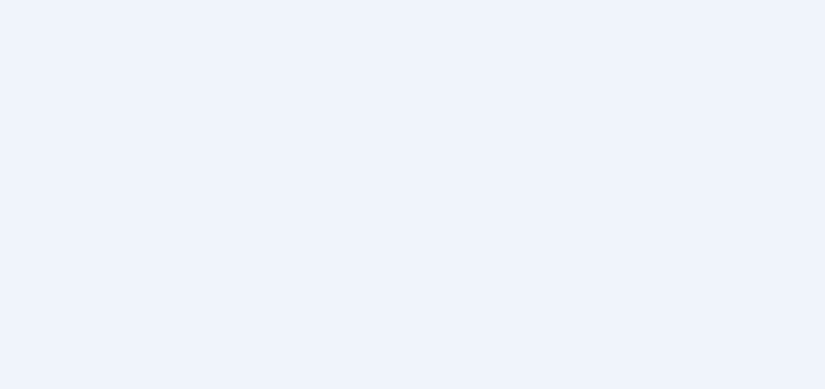

Following & Followers
| 🏠 Tutorial Home | ← Publishing Content | Reactions Module → |
| ## How Fediverse Following Works |
Following in ActivityPub is a three-step handshake. The remote
user’s server sends a Follow activity to the local actor’s
inbox. Joomla Fediverse receives it, checks the configured follow
policy, and — if the policy permits — immediately responds with an
Accept activity back to the remote actor’s inbox. From that
point on, the local actor’s new posts are delivered to the remote
follower’s home timeline. Unfollowing works in reverse: the remote
server sends an Undo(Follow) activity, and Joomla Fediverse
removes the relationship from its followers table. |
Prerequisites
- Joomla Fediverse installed and both plugins enabled
- A local actor (see Tutorial 03 — Creating Actors)
- Follow policy set to
auto-acceptin Components → Fediverse → Options (default)
Step 1: A Remote User Follows a Local Actor
When someone on another Fediverse server (say,
alice@peer.localhost) searches for
grace@yoursite.example and clicks Follow,
their server sends a Follow activity to:
POST https://yoursite.example/activitypub/actors/grace/inbox
Content-Type: application/activity+json
{
"@context": "https://www.w3.org/ns/activitystreams",
"type": "Follow",
"actor": "https://peer.localhost/users/alice",
"object": "https://yoursite.example/activitypub/actors/grace"
}Joomla Fediverse receives this in grace’s inbox, verifies the HTTP
Signature on the request, and — because the policy is
auto-accept — immediately responds with:
POST https://peer.localhost/users/alice/inbox
{
"type": "Accept",
"object": { "type": "Follow", ... }
}The follow relationship is now active. The next time grace publishes an article, it will be delivered to alice’s inbox automatically.
Step 2: View Followers in the Admin
 After alice follows grace, the Followers column increments to
1.
After alice follows grace, the Followers column increments to
1.
You can click the follower count (or the actor row) to drill into the Followers sub-view, which lists each remote follower with their actor URI and the timestamp of the follow.
Step 3: Triggering a Follow from the Peer (Testing)
In a test environment where you control both sides, you can instruct
the Peer mock server to send a follow request programmatically. The
acceptance tests in
tests/Acceptance/04_tutorial_follow.feature automate this
scenario end-to-end.
For manual testing, use the Peer’s admin panel or its API to look up
grace@yoursite.example and initiate a follow. The
relationship state on the Peer side should transition from
pending to accepted within a few seconds of
the inbox worker processing the request (see Step 1).
Step 4: Local Actor Following a Remote User (C2S)
Outbound follows — where a local actor follows someone on a remote server — require an OAuth 2.0 Client-to-Server (C2S) flow because they originate from a user action rather than a server-to-server push. This is covered in §5.4 of the manual. In short:
Obtain an OAuth access token scoped to
write:followsfor the local actor.POSTaFollowactivity to grace’s outbox:{ "type": "Follow", "object": "https://peer.localhost/users/alice" }Joomla Fediverse signs the delivery and POSTs it to alice’s inbox on the Peer.
If the Peer auto-accepts, grace’s Following count increments.
Step 5: Unfollow
Unfollowing is symmetric to following. The remote server sends an
Undo(Follow) activity to grace’s inbox:
{
"type": "Undo",
"object": {
"type": "Follow",
"actor": "https://peer.localhost/users/alice",
"object": "https://yoursite.example/activitypub/actors/grace"
}
}Joomla Fediverse removes alice from grace’s followers table. The Followers count on the Actors list drops back to zero. Future articles published by grace will no longer be delivered to alice.
Screenshots

After the Peer sends a follow request, the Actors list updates to show the new follower count once the inbox worker processes the activity.Common Issues
| Symptom | Likely cause | Solution |
|---|---|---|
| Follow request not accepted | Follow policy set to manual |
Change the default follow policy to auto-accept, or
manually approve the request via the Followers sub-view |
| Follower count not updating | Inbox worker task not running | Run Fediverse — Inbox Worker via System → Scheduled Tasks → Run Now |
| HTTP 401 on incoming follow | HTTP Signature verification failed | Ensure the remote actor’s public key is reachable; check that server clocks are within 5 minutes of each other |
| Accept activity not delivered back to remote | Delivery task not running | Check the delivery queue and run the Deliver Outbound Activities task |